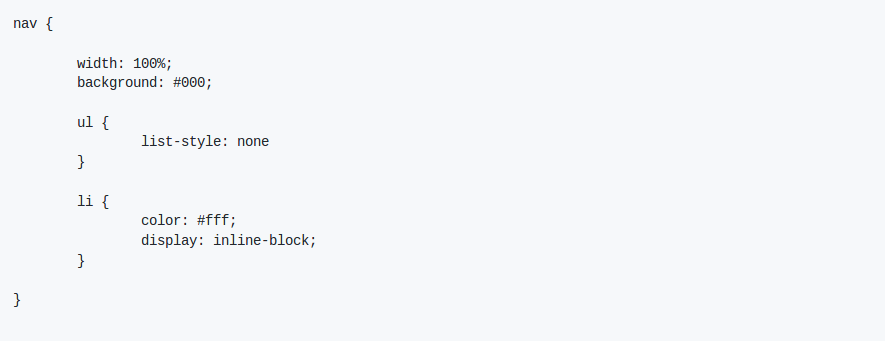
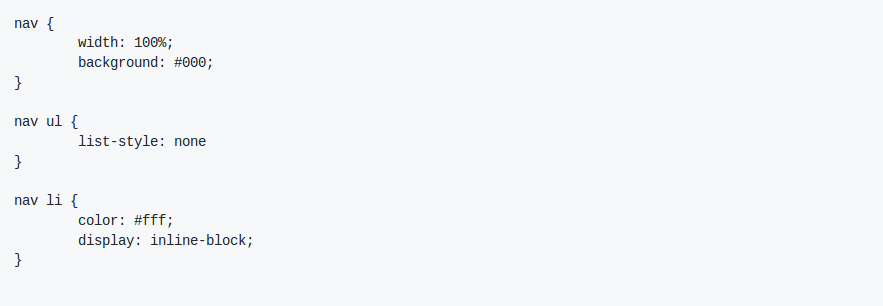
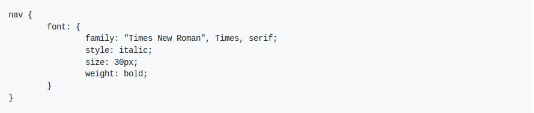
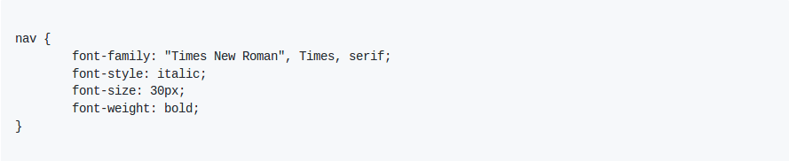
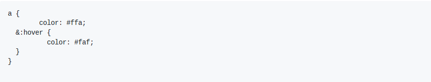
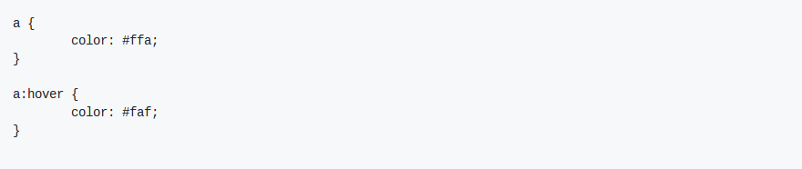
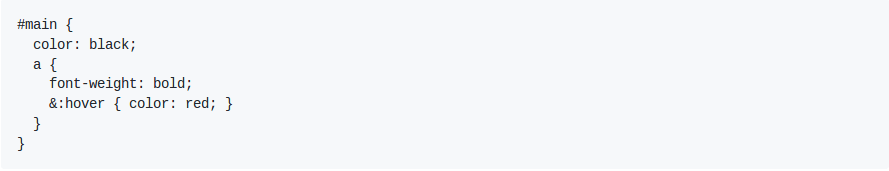
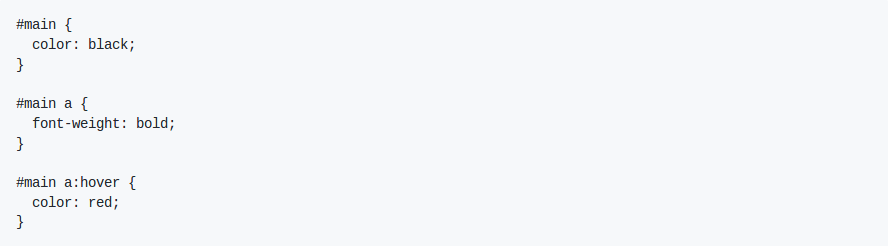

Em Sass podemos utilizar mesmos seletores do CSS: de tipo, de classe e de id. Neste tópico veremos algumas facilidades para tornar a escrita mais rápida utilizando seletores, propriedades aninhadas e pseudo-elementos.
Os seletores aninhados ou nested selectors, permitem que as regras CSS fiquem aninhadas uma dentro da outra. Por exemplo:
O código CSS correspondente:
Abaixo o resultado do código acima:
A regra interna aplica-se apenas dentro seletor da regra mais externa. Esta forma de escrita evita a repetição de seletores e faz com que blocos de CSS aninhados fiquem mais simples.
Use os seletores aninhados com cautela!
Um grande problema ao utilizar muitos níveis de seletores é geração de código inútil que em vez de facilitar, pode dificultar seu trabalho criando regras muito específicas e aumentando o tamanho do arquivo CSS.
Para evitar problemas, recomenda-se o uso de no máximo 3 aninhamentos.
CSS tem algumas propriedades que utilizam "nome composto", por exemplo: font (font-family, font-size, font-weight...) e o border (border-style, border-width, border-color...), todos eles utilizam um prefixo em comum. Em Sass, em vez de digitar as propriedades uma a uma, podemos aninhá-las, assim como fazemos com os seletores. Basta escrever o prefixo uma vez e o nome das propriedades dentro dele.
Por exemplo:
O código CSS correspondente:
Abaixo o resultado do código acima:
O caractere & é utilizado fara fazer referência ao seletor pai, com ele também podemos aninhar os pseudo-elementos.
Exemplo:
O código CSS correspondente:
Outros exemplos de utilização do &:
Será compilado para:
